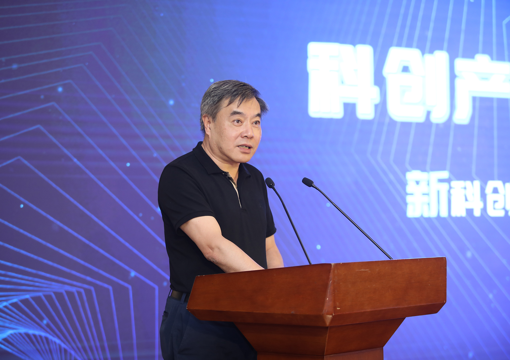
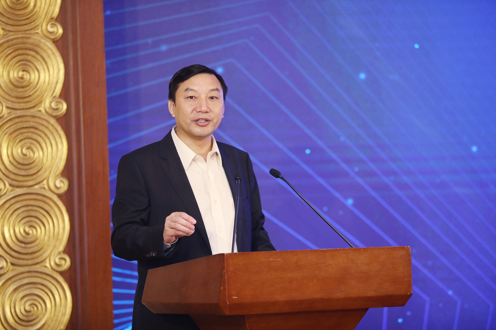
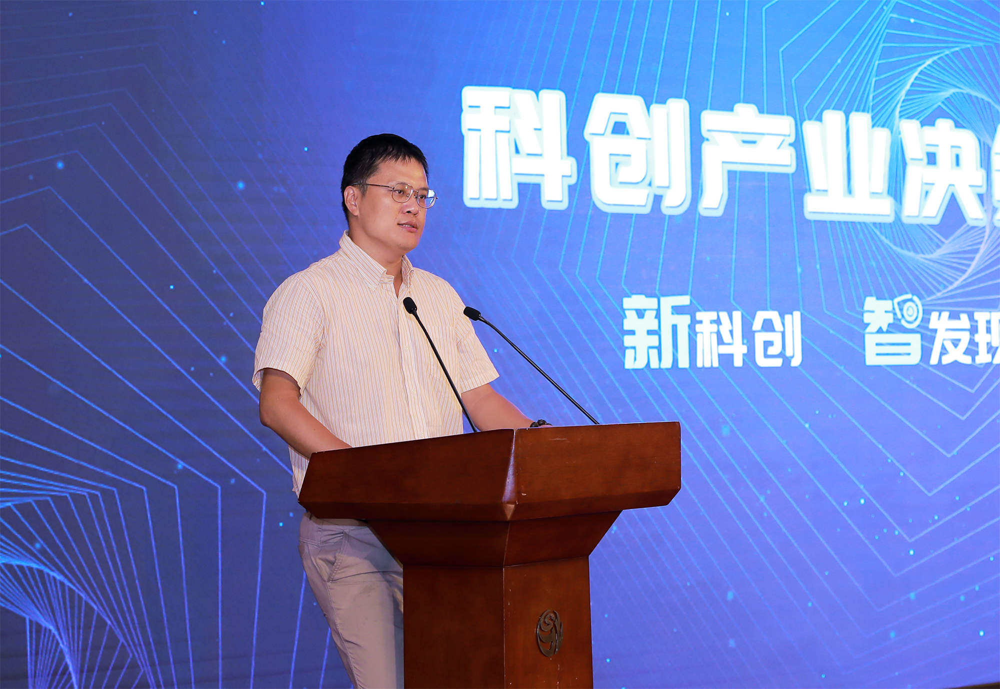
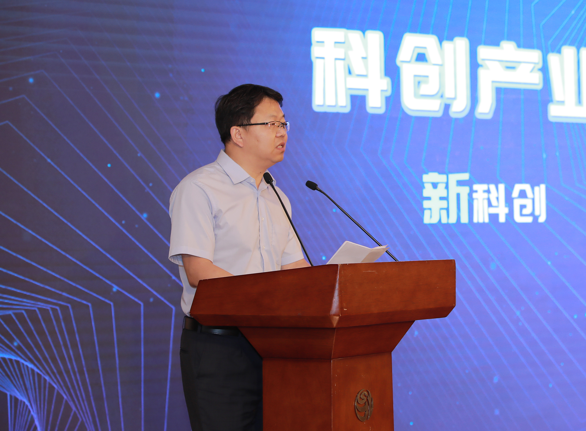
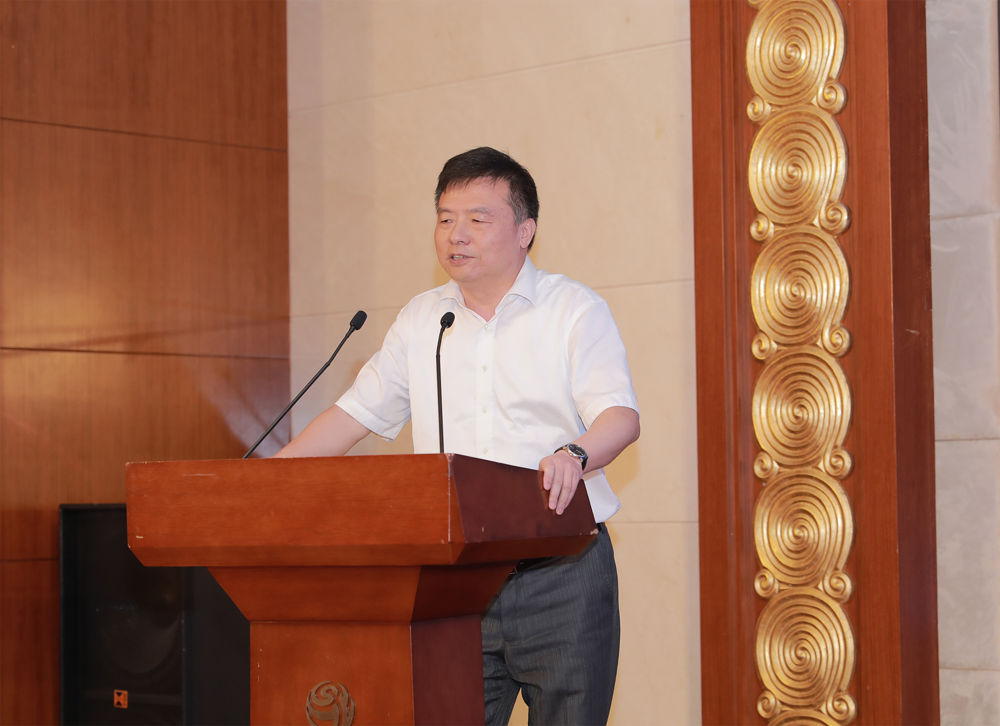
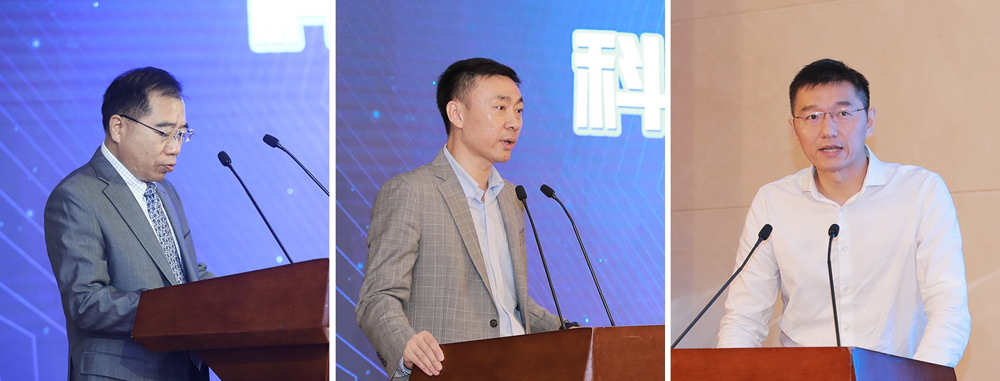

NewsSource:GTCOMDate: 12 September 2019views:9
The Technology and Innovation Industry Decision-maker Forum themed by "new technology and innovation, intelligent research and discovery" was held in Shanghai on September 12, 2019. Leaders and industry elites from financial technology institutions and enterprises gathered here to explore an innovative development path for global research and technology discovery. Some of them are from China Publishing Group Corp., Shanghai Stock Exchange, Economic and Information Technology Commission of Shanghai Municipal People’s Government, Shanghai Shibei Hi-tech (Group) Co., Ltd., Global Tone Communication Technology Co., Ltd., Guosen Securities Co., Ltd., BOC International (China) Limited, KPMG Advisory (China) Limited and China Electric Data Services Co., Ltd.
The Technology and Innovation Industry Decision-maker Forum held in Shanghai
Good Ecological Environment in the IndustryPromoting Deep Integration of Finance and Technology
It is time for us to develop with external force. In the wave of the flourishing global technology-and-innovation sector, Shanghai deepens its reform of the technology system with increasing pressure and sense of mission in terms of technology innovation, marching toward the objectives of becoming a globally influential international financial center and technology center, and providing new opportunities for transformation and development of enterprises from different industries.

Mr. Pan Kaixiong, Vice President of China Publishing Group Corp.
Mr. Pan Kaixiong, Vice President of China Publishing Group Corp., said in his speech on the forum that as finance and technology are integrating into each other deeply, the traditional publishing industry should explore a new path for transformation and development in integration, including integration of publishing and technology and finance. As a subordinate enterprise of China Publishing Group Corp., GTCOM is an enterprise deeply rooted in financial technology and scientific research data analysis. It is exploring application of big data and artificial intelligence in scenarios such as technology innovation, financial investment and financial regulation. It is hoped that GTCOM can fully leverage the advantages of the Global Research and Technology Discovery System so as to make contributions to the building of Shanghai into a financial and technology innovation center.

Mr. Liu Ti, Vice General Manager of Shanghai Stock Exchange
Mr. Liu Ti, the vice general manager of the Shanghai Stock Exchange, stated in his speech that technology innovation requires support from the capital market, including the "SSE STAR market.” Support of direct financing, particularly listed equity financing, for technology innovation enterprises is crucial. Meanwhile, he mentioned that the capital market has the butterfly effect on financial operation and the pilot registration system of the SSE STAR market is an effective method for supply-side reform in the capital market. If the registration system is improved and implemented from the perspectives of the reviewing institution, issuer, and the listing-and-exit mechanism, it will be helpful for the capital market to form good ecology and guarantee the quality of listed companies, and consequently the support of the capital market for technology innovation will be smoother. Thus, GTCOM will join hands with Shanghai Stock Exchange Technology Co., Ltd. to serve industrial users, build a bridge for mutual integration and the promotion of technology and finance, persevere in the pursuit of technology and innovation, and promote innovation through technology.

Mr. He Wei, Deputy Chief, Division of Software and Information, Economic and Information Technology Commission of Shanghai Municipal People’s Government
Mr. He Wei, deputy chief at the Division of Software and Information in the Economic and Information Technology Commission of the Shanghai Municipal People's Government, said the city has embraced the new opportunities for industrial development brought by the new generation of information technologies. In regard to big data, a big data center has been established to accelerate the building of the system for data-resource sharing and promote the opening of public data. Commercial data transactions have been explored, and companies have been established to provide standardized data services for more than 500 member institutions. Attention has been given to innovation guidance as the means to promote big data and its application to finance, healthcare, transportation, education, commerce and trade, tourism and agriculture, so as to fully realize the dividends of big data. Meanwhile, the Shibei Hi-tech Big Data Base will be leveraged to build innovation ecology of big data and accelerate industrial development.

Mr. Chen Jun, president of Shanghai Shibei Hi-tech (Group) Co., Ltd.
Mr. Chen Jun, president of Shanghai Shibei Hi-tech (Group) Co., Ltd., stated that the company is building the industrial ecological environment according to the five-in-one layout and positioning to promote regional economic development. During this process, the company values mutual empowerment between big data and artificial intelligence and hopes that they can achieve common prosperity by making use of advantages of each other. There have been more than 300 technology companies of big data and artificial intelligence in the high-tech park of Shanghai, and GTCOM is included among them. With the guidance of the SSE STAR market, the park will continue facilitating technology innovation enterprises that have acquired core technology in key fields such as GTCOM and providing comprehensive services for them including "policy + space + system + investment + ecology,” providing abundant support for enterprises in the park to march confidently toward the "SSE STAR market.”
With the Wave of Development of Technology and Innovation Industry,Application of the Global Research and Technology Discovery System is Explored
Technology companies are characterized by strong growth, intensive capital and uncertain technology paths. Investors, however, assess technology value of target companies obviously differently from traditional ones. Faced with the new generation wave of technology and innovation led by the SSE STAR market, how can financial investors find innovation technology, physical value and potential investment risk of intelligent assessment? How can Chinese technology enterprises achieve and encourage innovation with technology, promote development of technological finance with technological big data and empower innovation development throughout a range of industries?

Eric Yu, CEO of Global Tone Communication Technology Co., Ltd.
Global Tone Communication Technology Co., Ltd. is among the world’s leading technology innovation enterprises. CTOM’s CEO Eric Yu shared his wisdom in regard to empowering development in the technology-and-innovation sector with technological big data from the dimensions of new technology and innovation along with intelligent research and discovery. He said the emergence of the "SSE STAR market" has hastened the integrated development of technology and finance and opened a brand-new market where global technological data is used to assess technological strength and position of enterprises. The technological advantages and global technological data of GTCOM - including the multilingual natural language processing algorithm, knowledge graph and machine translation - provide strong support for cutting-edge technology, technology-and-innovation enterprises, and preferred talents of intelligent discovery. Based on the Global Research and Technology Discovery System, it is possible to conduct panoramic analysis of enterprises from the dimensions of technology innovation, enterprise stability, investment risk and market impact. Their capacity for innovation, technological position in the industry, investment risk and market impact of target companies can be gauged accurately so as to provide preference for making decisions in terms of technological investment and R&D, promote the integration of technology and finance, and empower the development of new technology and innovation.

Mr. Li Shifeng, president of China Electric Data Services Co., Ltd.
Mr. Li Shifeng, president of China Electric Data Services Co., Ltd. shared his experience from the angles of healthcare big data and technological innovation in the industry. He stated that the emergence of the SSE STAR market has provided good environment for the development of healthcare big data. To learn about the situation of bio-pharmaceutical enterprises comprehensively, investors have an urgent demand for data in enterprises, talents, drug devices, and biomedical investment and financing. Accordingly, China Electric Data Services Co., Ltd. will provide comprehensive healthcare information service for the capital market based on the data advantages in the global healthcare area as well as the technological and business advantages of GTCOM to provide professional data services and intelligent investment assistance so that investment institutions can wisely choose their investment targets and limit their exposure to risks.
Deeply Rooted in Technological Big Data,Empowering Innovative Development of Financial Industry
The rapid development of financial technology is inseparable from the active response of market players. Consequently, amid the promotion of capital and technology, many traditional financial institutions have accelerated the integration of finance and technology and revised their service models.

(From left to the right) Mr. Yue Kesheng, president of Guosen Securities Co., Ltd.; Mr. Chen Xinfeng, managing director of BOC International (China) Limited and vice chairman of Investment Banking Management Committee; Mr. Wang Dapeng, a partner at KPMG Advisory (China) Limited
Mr. Yue Kesheng, president of Guosen Securities Co., Ltd., said on the forum that the securities industry is entering the new era of financial technology with the development and maturity of technologies such as cloud computing, big data and artificial intelligence. While the securities industry empowers its development with financial technology, it also provides service for excellent innovative enterprises and growing technological enterprises in the whole value chain. Mr. Chen Xinfeng, the managing director of BOC International (China) Limited and vice chairman of the Investment Banking Management Committee, said the global research and technology discovery system is helpful for facing the pain points of investment banking and provides ample exploration and trials for identifying potential customers, enhancing risk grasp, and judging the scientific research value of enterprises. Mr. Wang Dapeng, a partner at KPMG Advisory (China) Limited, asserted that the integration, sharing and opening of financial data have become a trend and there have been many breakthroughs in application of big data and artificial intelligence in financial institutions.
The deep integration of finance and technology has opened new space for financial investment. Thus, the Global Research and Technology Discovery System provides new tools and methods for investment and development of the technology-and-innovation sector. There is broad development space for technology empowering finance. After the forum, guests exchanged their opinions in the zone for innovative application, learned about and experienced the specific applications of GTCOM’s JoveEye (Global Research and Technology Discovery System) in empowering technology and innovation, and had discussions with team members.

Site of the forum
It is a significant goal to promote the deep integration of emerging technologies, such as the Internet, big data and artificial intelligence with the real economy, and strengthen the digital economy by extension. In the future, based on the continued integration of technological innovation and the financial marketplace, the Global Research and Technology Discovery System will further capital investment in high-quality technology-and-innovation enterprises, accelerating the rise of China's technology unicorn and promoting the development of a technology-and-innovation sector in Shanghai, throughout China and into the world beyond.